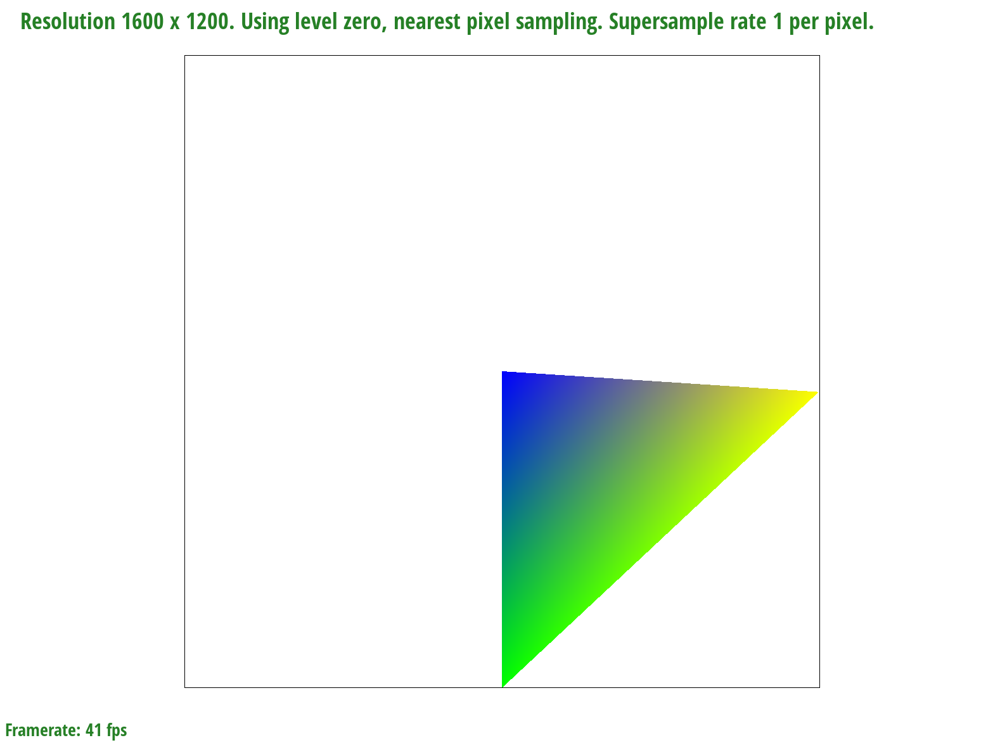
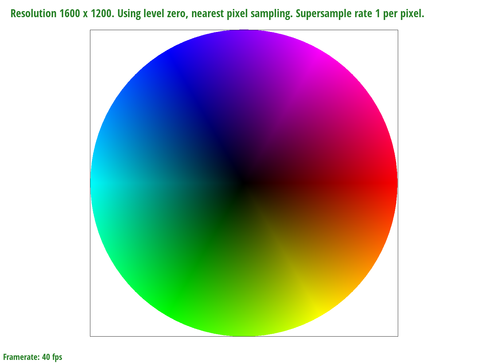
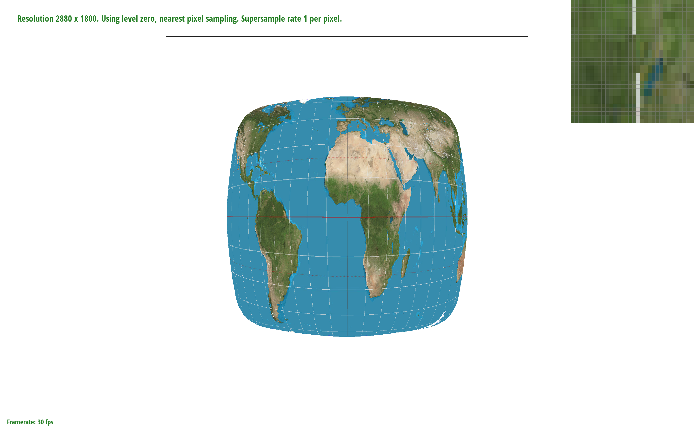
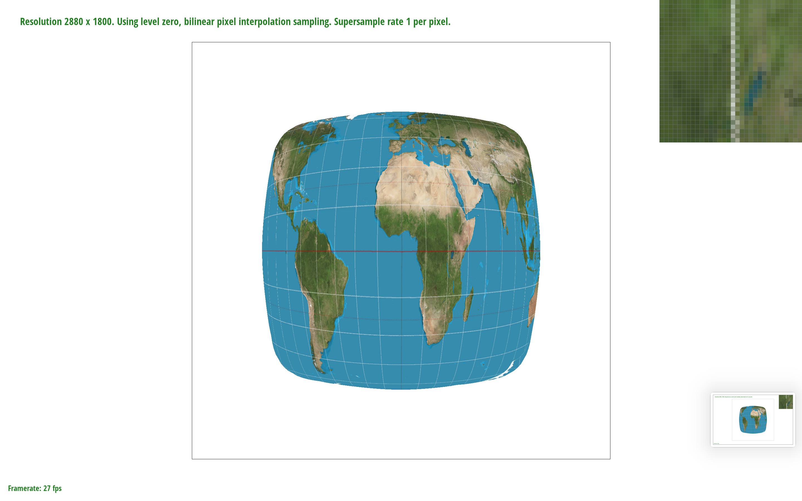
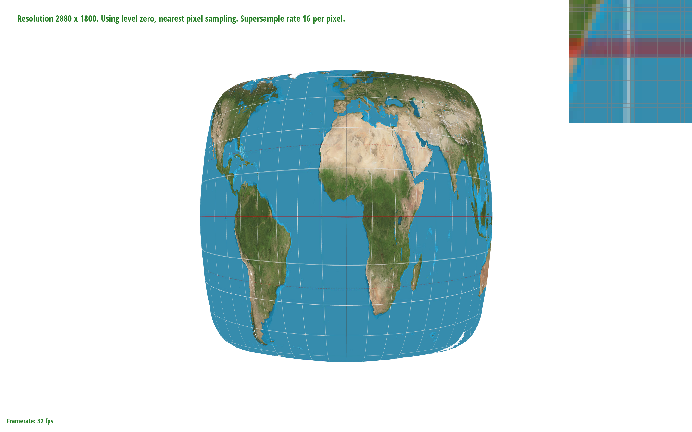
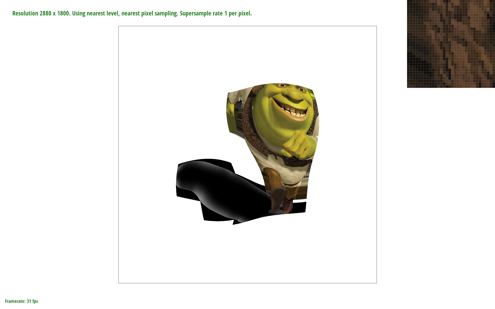
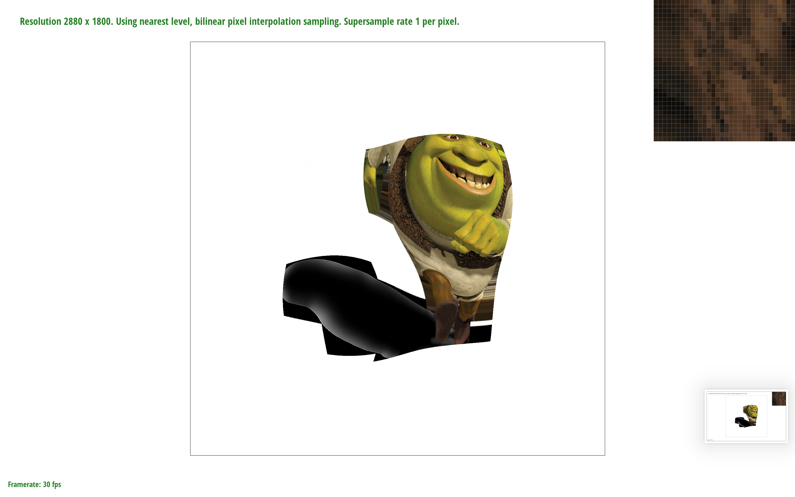

Overview
Give a high-level overview of what you implemented in this project. Think about what you've built as a whole. Share your thoughts on what interesting things you've learned from completing the project.
Section I: Rasterization
Part 1: Rasterizing single-color triangles
Triangles are rasterized by
- establishing coordinates of the smallest bounding box that contains the triangle
- checking if the center of every pixel in the bounding box is contained in the triangle using the three-line test
- and coloring the sample buffer for pixels that are contained.
This is no worse than checking each sample within the bounding box of the triangle because it is doing exactly that. There are no special optimizations besides inlining.

Part 2: Antialiasing triangles
Supersampling is done by
- growing the size of
sample_bufferby a factor of the sample rate. Now, each pixel is represented bysample_rateindices rather than just one. This is the only data structure change. - picking
sample_ratecoordinates in each pixel (each integer step) and filling the corresponding index insample_bufferif it is in the triangle. - averaging the sampled values to create a downsampled color to input into
rgb_buffer. This antialiases triangles by visually smoothing edges, creating a transition between the inside and outside of the triangle.
From left to right, we can observe that the lines on the triangle appear less jagged (view the zoomed photo if necessary, I tried to position them left to right on one line).
We observe this because the triangle edges are being blended with the white border to create a softer transition between colors. Consequently, the lines appear smoother.
Part 3: Transforms
Section II: Sampling
Part 4: Barycentric coordinates
Barycentric coordinates are coordinates that account for their position relative to the vertices of a shape (a triangle in this case). These coordinates are a weighted mean of the area between a chosen point and the three vertices.
The triangle above has blue, yellow, and green vertices. Each coordinate within it is a weighted sum of those colors.
Pictured above is test7.png.
Part 5: "Pixel sampling" for texture mapping
Pixel sampling is sampling points from an image to "reconstruct" it. We can sample points from a texture to display it on a screen by sampling the color of the texture at each coordinate.
For this project, I implemented two sampling methods. sample_nearest would find the closest texel based on the barycentric coordinates and sample a color from it.
sample_bilinear is similar but does a bilinear interpolation of the four closest texels.



We can see in the above images that the latitude/longitude lines on the map are not connected properly when using nearest sampling with a sample rate of 1. Bilinear sampling fixes this by averaging two texels. This issue becomes less apparent with a higher sample rate. There will be a large difference between nearest and bilinear sampling when the image is low resolution and the texture is very thin. This leaves lots of room for gaps in the rendering.
Part 6: "Level sampling" with mipmaps for texture mapping
After defaulting to level 0 for part 5, I implemented nearest and linear level sampling. Nearest level sampling finds the best mipmap level based on difference vectors and produces a higher resolution version of the texture. Linear level sampling is very similar, but instead of picking the nearest, it returns the average of the two nearest mipmaps. Both of these are bounded by [0, # of mipmaps].
With each sampling method, higher quality means less performance. Nearest level sampling and increasing the sample relative increase the memory taken through either mipmaps or the sample buffer. Bilinear pixel sampling becomes more computationally expensive as a result of checking two levels and doing more interpolation.
 The above images show how choosing a better pixel sampling method improves the texture of Shrek's scarf/top.
Section III: Art Competition
If you are not participating in the optional art competition, don't worry about this section!